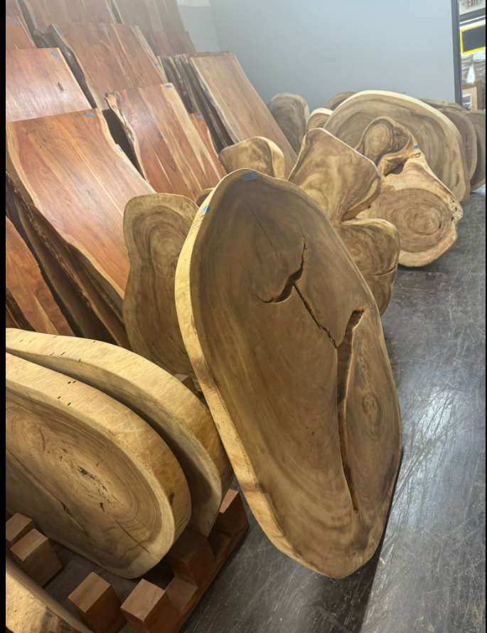

Pricing
The price is based on the size of your table.
Each slab has its own dimensions, grain, and character. Your final price depends on the table size you need and the slab you select in person. Our warehouse team reviews the options and price with you before the work begins.
The procedure
From raw slab to your finished table.

-
01
Choose a table style
Start by deciding on the shape, look, and approximate size that fits your space.
-
02
Visit and pick your slab
Come to the warehouse in person to see the wood, compare the grain, and choose the actual slab used for your table.
-
03
Choose your own legs
Pick the legs or base that suit your table and your room. Browse the steel and solid wood options on our warehouse floor and choose the ones you like.
-
04
We furnish and finish it
After you select the slab, our team prepares, furnishes, and finishes the table to bring out the wood’s natural character.
-
05
Pick it up at a later date
The work takes time. We contact you when your finished table is ready to be picked up from the warehouse.
Your base, your call
Choose your own legs.
Your slab doesn't have to come with a standard base. Pick the legs yourself, in person, from what we have in the warehouse.

Black steel legs
Clean, modern bases in X, trestle, and rectangular frame styles.

Solid wood legs and bases
Carved slab legs, turned posts, and natural trunk pedestals for a more organic look.